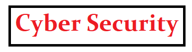

Year 1
 Introduction to Computer Science
Mathematics for Computing
Programming Fundamentals
Data communication and Computer Networks
Database Management Systems
Routing and Switching Essentials
Operating Systems
Web Application Development
Connecting networks
Network Engineering Project
Introduction to Computer Science
Mathematics for Computing
Programming Fundamentals
Data communication and Computer Networks
Database Management Systems
Routing and Switching Essentials
Operating Systems
Web Application Development
Connecting networks
Network Engineering Project
Year 2
Network Programming Design
Principles Of Information Security
Virtualization And Storage
Advanced Database Management Systems
Embedded Application Development
Network Security
Physical Security
Cloud Computing
Internet of Things
IT Management Practice
Year 3
Cybersecurity
Digital Forensic Methods
Networked Systems
Security Audit and Testing
Law and Legal Frameworks for Acquisition and Evidence
Legal and Ethical Context
Effective Communication Skills 2
Year 4
 Penetration Testing
Cybersecurity 2
Advanced Network Systems
Individual Project
Artificial Intelligence and Human-Computer Interaction
Data Recovery and Advanced Digital Forensic Analysis
Penetration Testing
Cybersecurity 2
Advanced Network Systems
Individual Project
Artificial Intelligence and Human-Computer Interaction
Data Recovery and Advanced Digital Forensic Analysis
Course Fee
Year 1= Rs500 000
Year 2= Rs500 000
Year 3= Rs300 000
Year 4= Rs200 000
Entry requirments
Students should obtain a minimum of 3 passes at the GCE Advanced Level or Foundation Certificate in Higher Education
and obtain a minimum of 6 passes in the GCE Ordinary Level with Credit passes in English & Mathematics.